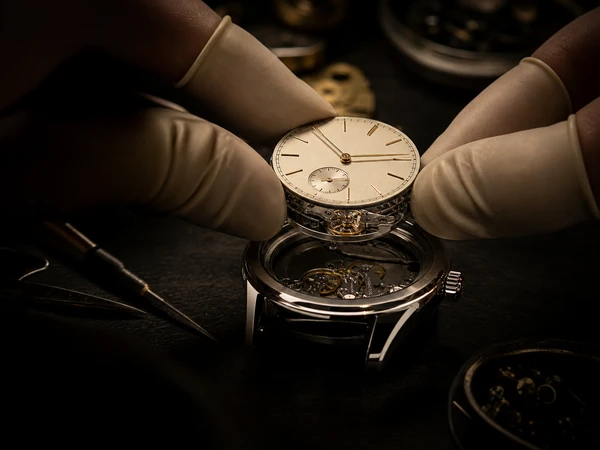
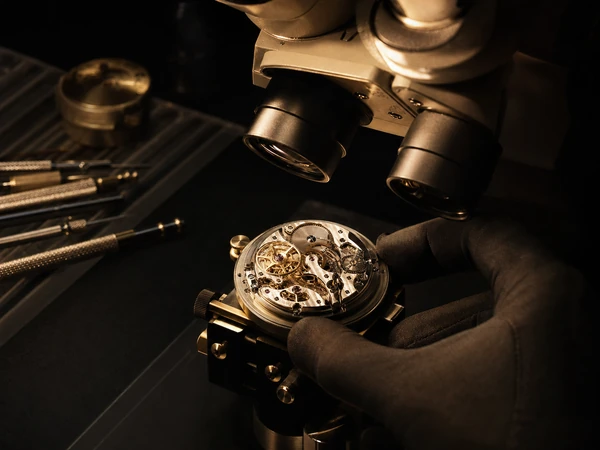
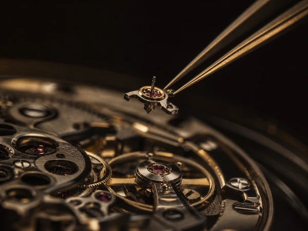
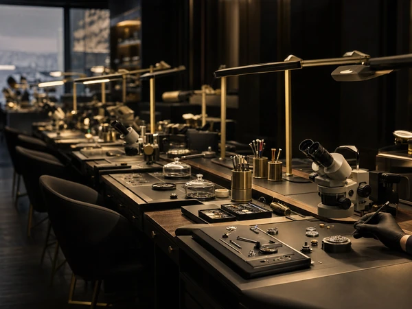

Posage et emboîtage
Pose de cadran, mouvement et bracelet. Emboîtage précis et manipulation des composants avec soin.
Opérateur en horlogerie formé au CFH Genève, avec des compétences pratiques en pose, emboîtage, assemblage et contrôle qualité.
Mon parcours dans des environnements où la qualité, la répétabilité et les cadences sont essentielles m’a appris à travailler avec méthode, concentration et constance. J’apporte à chaque opération la précision acquise dans l’artisanat et la discipline attendue en production.
IISavoir-faire

Pose de cadran, mouvement et bracelet. Emboîtage précis et manipulation des composants avec soin.

Contrôle visuel et esthétique, détection des écarts et respect des standards de qualité.

Travail sous binoculaire, utilisation des brucelles et outils horlogers, excellente habileté manuelle.

Respect des cadences, des procédures et des délais dans des environnements industriels exigeants.
IIIExpériences professionnelles
Expérience horlogère
08.2018 · 09.2018
Rolex
Depuis 08.2023
Novae
Travail en équipe · Délais et rythme soutenu05.2022 · 07.2023
Bruno Meyer
Moulages complexes · Retouches précises09.2020 · 04.2022
Boulangerie Rouge
Formation d’apprentis · Contrôle des opérations2019 · 2020
David Bourdenet · Alexandre Perchat
Éléments délicats · Recettes techniques2017 · 2018
Chocolaterie du Pont Neuf · Bruno Meyer
Production artisanale de précision2014 · 2017
La Ciboulette
Première expérience professionnelleIVFormations
2026
Formation opérateur
CFH Genève · Plan-les-Ouates
2025
Formation opérateur
IFAGE · Pont-Rouge
2018
C.A.P
CFA de Groisy
2017
C.A.P
CFA de Groisy
Prendre contact
Vous recherchez un profil rigoureux, manuel et attentif à la qualité ? Échangeons.